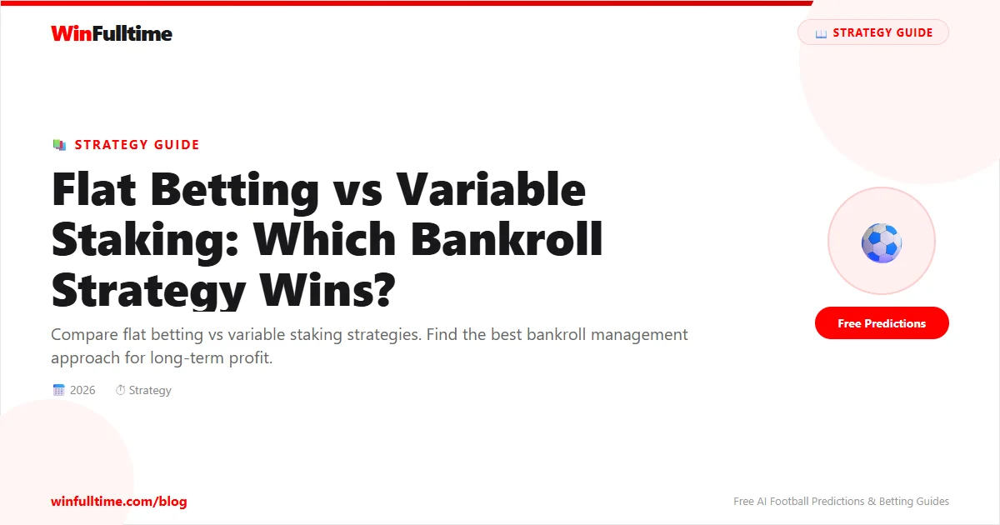

Your staking strategy matters more than your selection method. Most bettors focus on picking winners, but how much you bet determines whether you profit long-term. Let's compare the two main approaches.
You bet the same amount on every bet, regardless of confidence or odds.
You adjust your stake based on confidence, odds, or edge size.
| Factor | Flat Betting | Variable Staking |
|---|---|---|
| Complexity | Simple | Complex |
| Bankroll Growth | Slow & Steady | Potentially Faster |
| Risk | Lower | Higher |
| Required Skill | None | Probability Estimation |
| Psychology | Easy | Difficult |
| Mistake Cost | Low | High |
Stake = Bankroll % (changes as bankroll changes)
Example: Always 2% of current bankroll
Stake = Kelly % ? (see our Kelly guide)
Most mathematically optimal but complex
Stake = 1 unit for low, 3 units for high confidence
Requires honest self-assessment
Stake = Higher for lower odds, lower for higher odds
Often used by professional bettors
Many pros use a hybrid:
Start with flat betting at Bet365, then transition to Kelly Criterion once you have a proven edge.
For beginners: Flat betting wins. For experienced bettors with proven edges: Variable wins.
The best staking strategy is one you can follow consistently with discipline.
Catch live matches as they happen. Get golden tips and in-play alerts.
In-Play TipsGenerate optimized accumulator combinations from today's AI-powered predictions. Set your target odds and get instant ticket suggestions.
Pro Ticket Builder →18+ Only • Please Gamble Responsibly
All content on WinFulltime is for informational and entertainment purposes only. Betting involves financial risk. If you or someone you know has a gambling problem, please seek professional help.